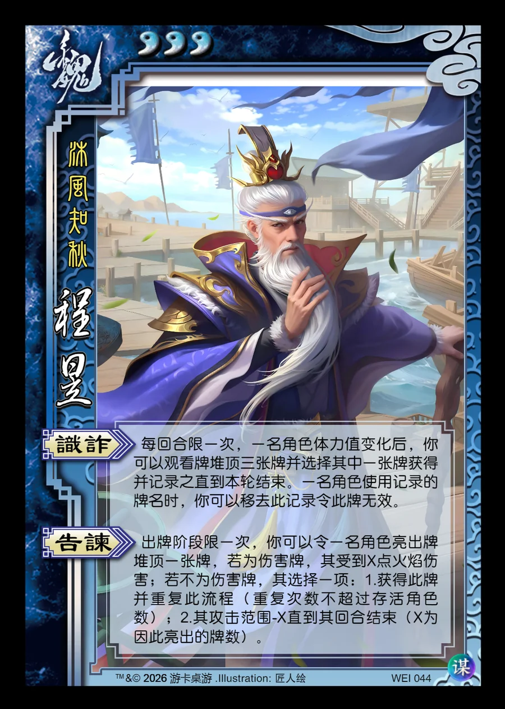

点击卡面查看大图
魏
谋程昱
♥3沐风知秋
识诈
每回合限一次，一名角色体力值变化后，你可以观看牌堆顶三张牌并选择其中一张牌获得并记录之直到本轮结束。一名角色使用记录的牌名时，移去此记录，然后你可以令此牌无效。
告谏
出牌阶段限一次，你可以令一名角色亮出牌堆顶一张牌，若为伤害牌，其受到X点火焰伤害；若不为伤害牌，其选择一项：1.获得此牌并重复此流程（重复次数不超过存活角色数）；2.其攻击范围-X直到其回合结束（X为因此亮出的牌数）。